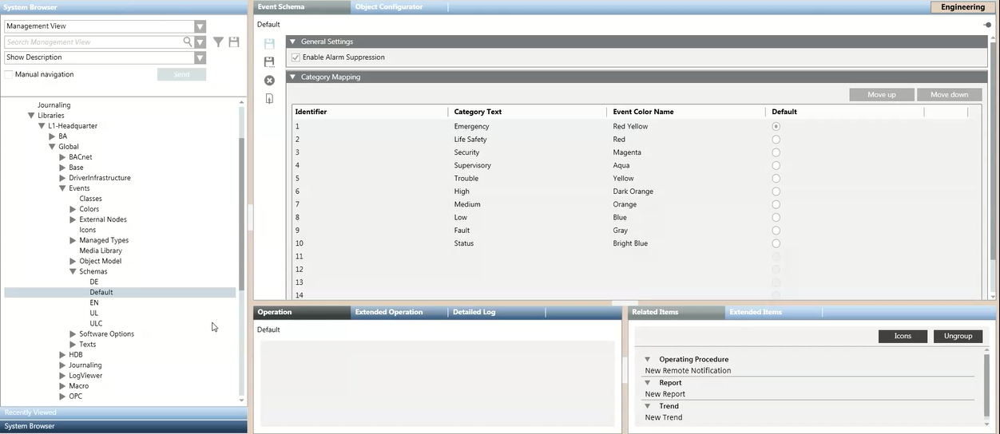

Event Schemas
The event schema is a configuration in an Events library that defines how alarms are presented to the user: what event categories are used in a Desigo CC installation, their corresponding category colors, and the mapping of different types of alarms to these categories, and to event sounds.
Each category defined in the schema corresponds to an event lamp in the Summary bar, which displays the associated category color. Alarms in Event List are also color-coded based on category.
Only one event schema can be set in a project, and it will apply system-wide to all client stations. Typically, when a new project is created from a template, a compatible event schema for the geographical location is set automatically.

The event schemas provided with the installation are located under Projects > System Settings > Libraries > L1-Headquarter > Global > Events > Schemas. Additional event schemas may be available in customized Events libraries at lower levels. For example, under …> L3-Country > Global > Events > Schemas.
- By selecting Project > System Settings, you can check the event schema currently assigned to a project in the Extended Operation tab.
- You can switch to a different event schema out of those already configured in the libraries. See Applying an Event Schema to a Project.
- You can also modify one of the existing schemas, or configure a new one, at the allowed customization level. See Configuring Event Schemas in a Library.
By default, the alarm suppression feature is enabled for any event schemas. Due to some restriction depending on specific countries regulations, you can disable alarm suppression in the event schemas. In such cases, the alarm suppression indicator will not display on the Summary bar and executing the relevant commands in normal operation will have no effect. See Disabling Alarm Suppression for an Event Schema.